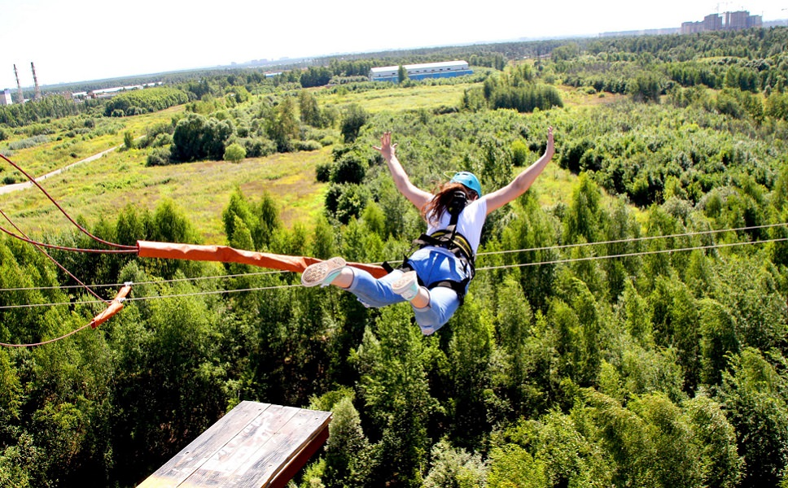

Экстрим - это
Экстремáльный спорт — деятельность, связанная с высокой степенью риска.
Эти виды деятельности часто включают скорость, высоту, высокий уровень
физических нагрузок и узкоспециализированное снаряжение
Примеры:
Банджиджампинг
Смысл этого аттракциона заключается в следующем: участнику привязывают после чего он совершает прыжок с огромной высоты. Канат растягивается, а когда до земли остается несколько метров сжимается обратно. Чувство полета приводит в неописуемый восторг тех, кто решается на прыжок.
бейсджампинг
Смысл этого аттракциона заключается в следующем: участнику привязывают Еще один вид экстрима, который предполагает прыжки с парашютом с предельно малых высот: крыш небоскребов или скал. Бейсджампинг признан самым опасным видом парашютного спорта. Полёт совершается на очень малой высоте и длится буквально секунды. Ошибка при таком полёте недопустима, поскольку она может привести к смерти.
Стритлагинг
Ещё один опасный вид спорта, заряжающий адреналином. Задача спортсмена — спуститься по автодороге на длинном скейтборде в положении лёжа. Скейтборд движется без тормозов, что существенно усложняет задачу. К тому же обзор дороги здесь ограничен.
Скалолазание
Вид спорта, имеющий много общего с альпинизмом. Здесь также нужны специальная подготовка и качественное снаряжение. Скалолазание подразумевает спуск и подъём по неподготовленным трассам со сложным естественным рельефам. Риск оказаться на дне ущелья невероятно велик, то есть ошибка или неисправный карабин могут стать роковыми. Начинать лучше с учебных скалодромов, а опытные скалолазы могут решится и на восхождение без снаряжения.